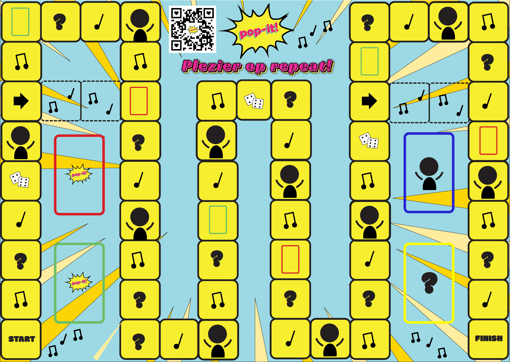

Project context
POP IT! is een creatief bordspel ontstaan uit een passie voor popmuziek. Het spel daagt spelers uit met muziekvragen, lyrics challenges en interactieve opdrachten.
Het doel is niet alleen competitie, maar vooral verbinding, humor en gedeelde muzikale herinneringen.
Doel
Een sociaal en interactief muziekspel ontwerpen.
Focus
Entertainment, verbinding en muziekbeleving.
Resultaat
Een volledig uitgewerkt bordspel concept + visueel design.
Spelontwerp

Promotie video
Resultaat
Een speels en sociaal muziekconcept dat mensen samenbrengt en interactie stimuleert via popmuziek.
Bekijk volledige uitwerking